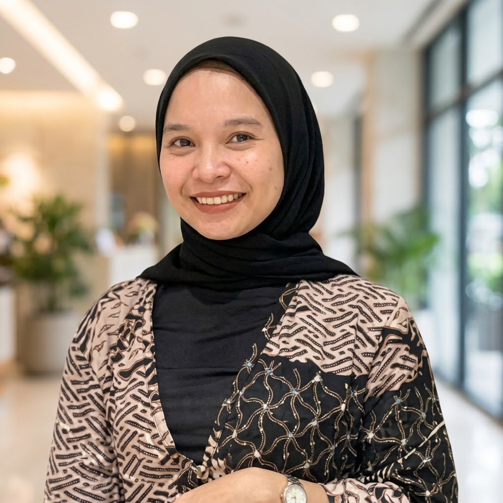
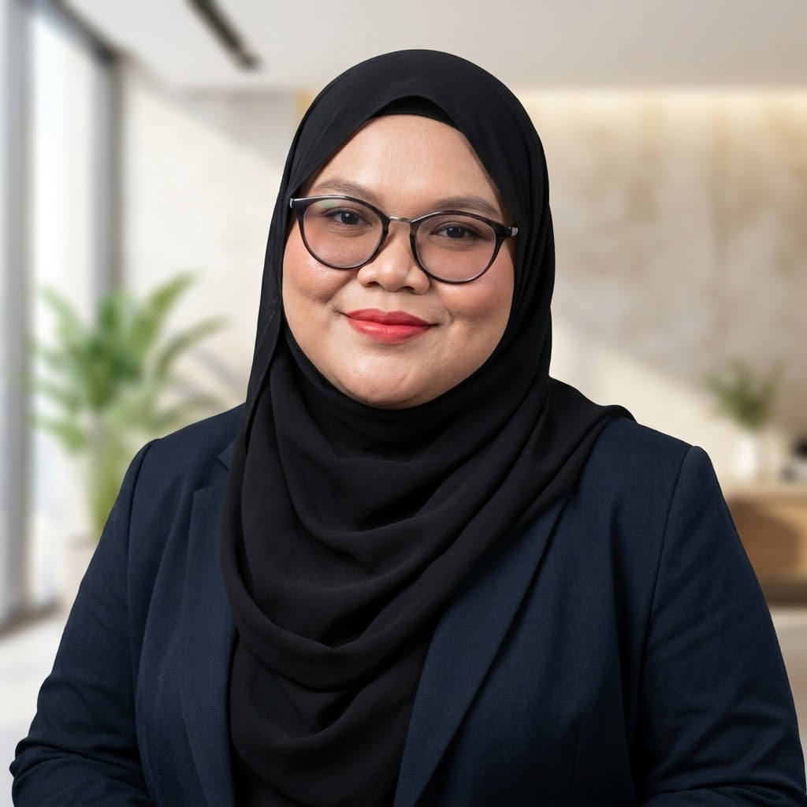
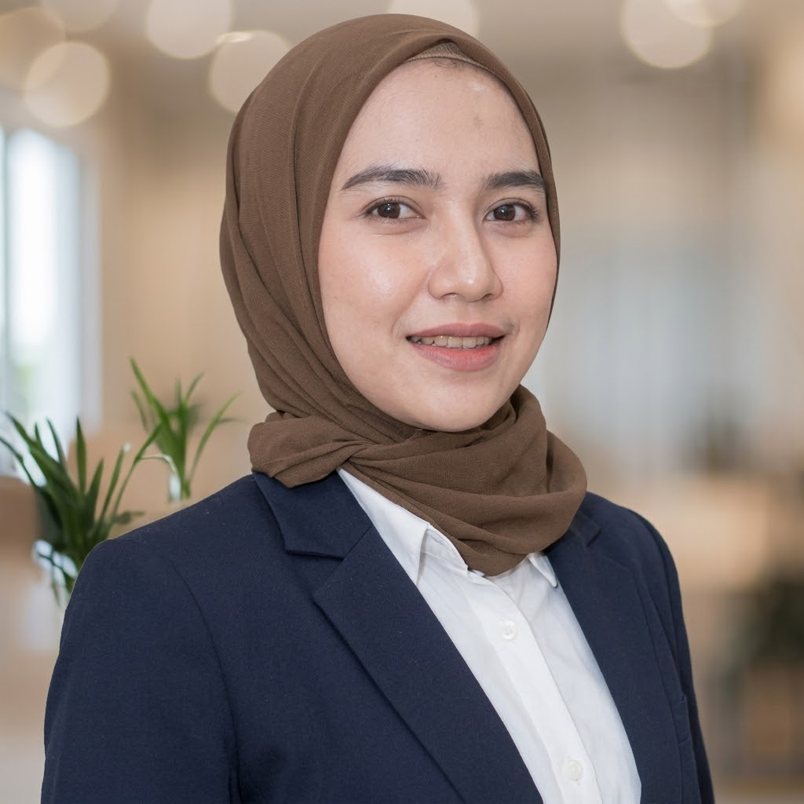
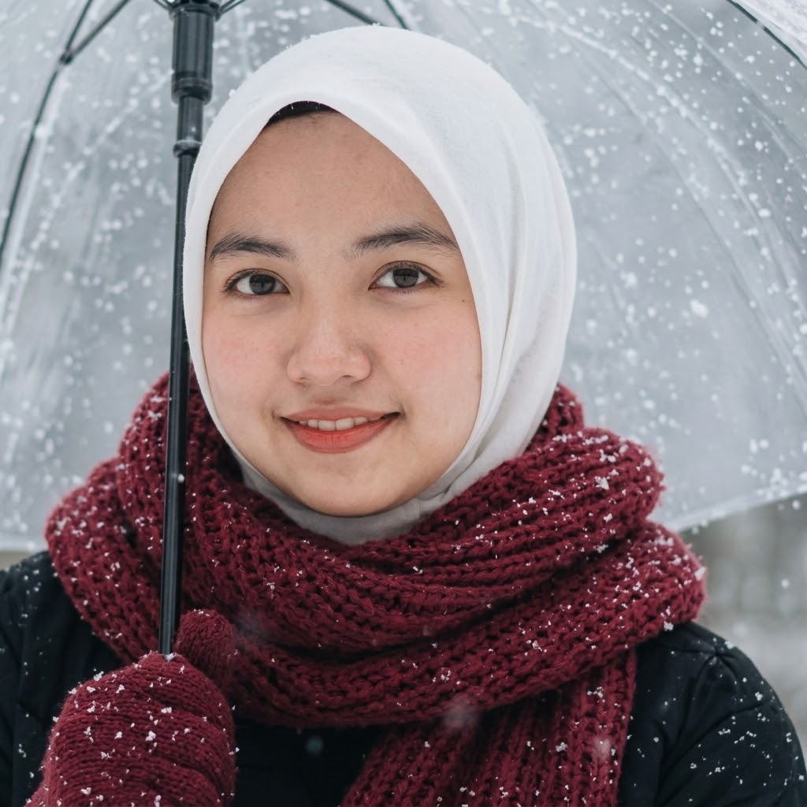
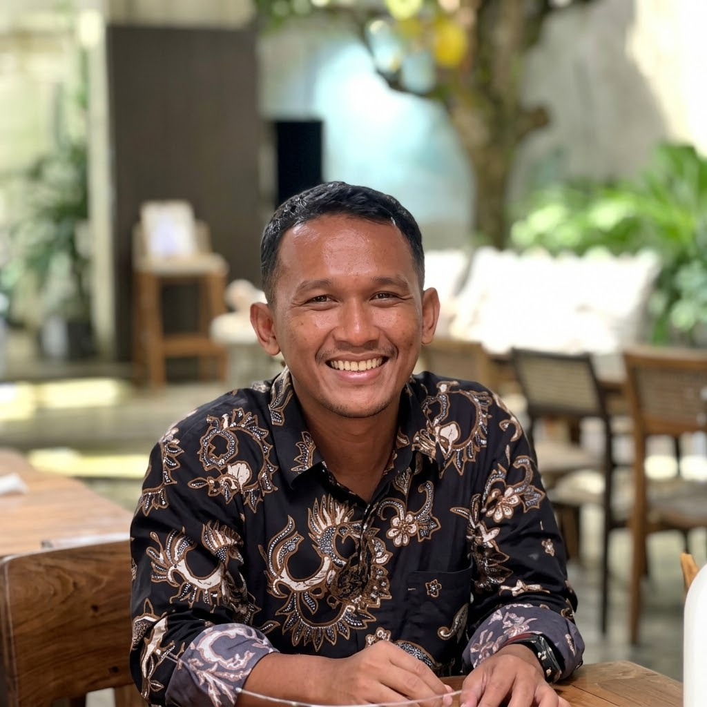

Menjembatani Kebutuhan Industri dengan Regulasi Resmi BPJPH & MUI
Gesid Halal Center adalah lembaga konsultan dan pendampingan halal profesional yang didirikan untuk memberikan solusi kepatuhan menyeluruh bagi dunia industri di bawah naungan regulasi UU No. 33 Tahun 2014 dan Perpu No. 2 Tahun 2022 tentang Jaminan Produk Halal.
Kami menyederhanakan alur sertifikasi halal yang sering kali dianggap rumit: mulai dari penyusunan Manual SJPH, identifikasi titik kritis bahan baku, audit simulasi kesiapan pabrik, hingga registrasi di sistem SIHALAL BPJPH dan pemeriksaan oleh Lembaga Pemeriksa Halal (LPH).
Dengan pendekatan berbasis data, keahlian teknis pangan, dan integritas tinggi, kami memastikan proses sertifikasi berjalan tepat waktu, transparan, dan dapat dipertanggungjawabkan secara hukum maupun syariat.

Filosofi Lembaga
"Halal bukan sekadar formalitas selembar sertifikat, melainkan sistem jaminan mutu dan komitmen etika berkelanjutan bagi konsumen."
Visi & Misi Operasional
Prinsip fundamental yang memandu setiap langkah pendampingan kami kepada seluruh mitra industri di Indonesia.
Pusat Keunggulan Standar Halal Nasional & Global
Menjadi lembaga pendampingan dan konsultan sertifikasi halal terdepan yang paling terpercaya di Indonesia dalam mewujudkan kepatuhan regulasi, penguatan mutu rantai pasok, dan peningkatan daya saing produk nasional di pasar domestik maupun internasional.
Pendampingan Teknis Komprehensif
Membimbing penyusunan manual SJPH, penyiapan dokumen bahan, dan tata kelola SOP halal secara presisi.
Pemberdayaan Kapasitas SDM Industri
Melatih Penyelia Halal dan auditor internal perusahaan agar mampu mengelola sistem jaminan halal secara mandiri.
Efisiensi Alur & Kepastian Waktu
Mempercepat proses audit melalui verifikasi awal yang ketat guna meminimalkan temuan dan penundaan perizinan.
Mendorong Ekosistem Industri Halal Berkelanjutan
Mendukung UMKM dan industri skala besar untuk memperluas penetrasi pasar ekspor berbasis sertifikasi resmi.
Nilai yang Kami Pegang Teguh
Integritas, akurasi teknis, dan etika profesional dalam setiap tahapan pendampingan klien.
Kepatuhan Tanpa Kompromi
Menjunjung tinggi kebenaran ilmiah dan kepatuhan syariat dalam setiap penelaahan dokumen bahan baku dan alur produksi.
Keahlian Terakreditasi
Didukung oleh tenaga ahli berlatar belakang teknologi pangan, kimia industri, farmasi, dan auditor bersertifikat resmi.
Alur & Biaya Jelas
Tidak ada biaya tersembunyi. Setiap rincian tahapan, estimasi jadwal sidang fatwa, dan status perizinan dilaporkan secara transparan.
Pendampingan Tuntas
Mendampingi perusahaan sampai sertifikat halal resmi terbit di SIHALAL dan siap digunakan untuk pemasaran produk Anda.
Team Gesid Halal Center
Jajaran kepengurusan dan tenaga profesional yang berdedikasi mengawal standardisasi dan pendampingan halal di Indonesia.

Murni Mupardila, S.Pd., M.A
Kepemimpinan Strategis & Arah Kebijakan

Mariam Jamilah, S.Sos
Administrasi & Tata Kelola Kelembagaan

Sindia Dwike Pratika, M.H
Manajemen Finansial & Kepatuhan Legalitas

Yetrawati, S.Sos
Jejaring Daerah & Integrasi Lapangan
Yohan Fitriadi, S.HI., MM
Peningkatan Kapasitas SDM & Kurikulum Halal

Alams Syahrizal
Publikasi, Branding & Komunikasi Visual
Aktivitas Audit & Pendampingan Industri
Bukti nyata komitmen kami mendampingi berbagai sektor industri di fasilitas pabrik, laboratorium, dan ruang pelatihan.

Audit Lapangan Jalur Produksi Pangan
Pemeriksaan alur sanitasi mesin, penyimpanan bahan, dan pencegahan kontaminasi silang di fasilitas pabrik.

Workshop Penyusunan Manual SJPH
Bimbingan teknis intensif penyusunan SOP halal bersama jajaran manajemen mutu dan tim QA perusahaan.

Forum Standarisasi Halal Nasional
Partisipasi aktif dalam sinkronisasi regulasi sertifikasi halal bersama BPJPH, LPH, dan pemangku kepentingan industri.
Siap Memastikan Kepatuhan Halal Perusahaan Anda?
Konsultasikan produk dan fasilitas Anda bersama tim konsultan ahli Gesid Halal Center. Dapatkan estimasi waktu dan roadmap audit yang transparan.